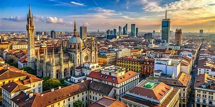
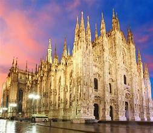
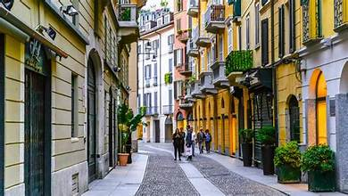
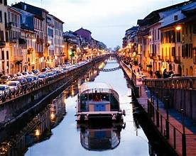
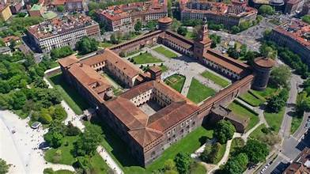
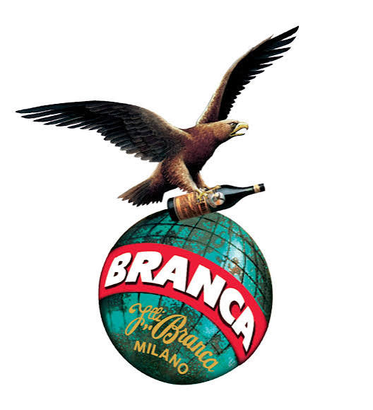
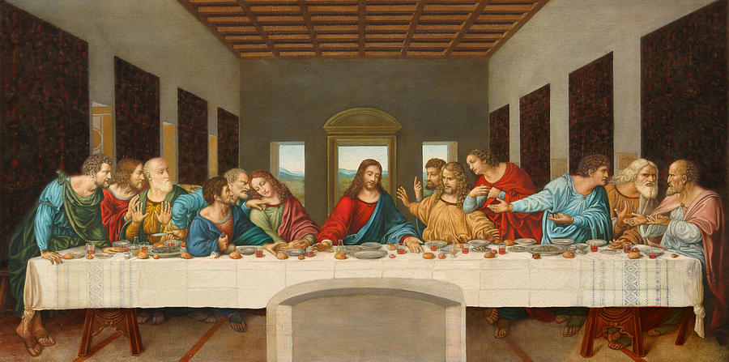

Milan blends historic architecture with modern elegance. From the iconic Duomo Cathedral to the stylish Galleria Vittorio Emanuele II, the city offers a unique mix of culture, fashion, and design.

A charming neighborhood filled with art, boutiques, and cafés.
Address: Brera, Milano
What I like:
The artistic vibe and cozy cafés make it perfect for wandering.

Perfect for sunset walks, aperitivo, and nightlife.
Address: Navigli District
What I like:
The sunsets here are magical — the reflections on the water are
unforgettable.

A historic fortress surrounded by beautiful gardens.
Address: Piazza Castello
What I like:
The gardens are peaceful and the architecture is stunning.
The birthplace of the iconic Italian aperitivo, known for its bold red spirit. Have a drink at the bar for a complete experience. Tickets are required to be booked in advance. If your time is limited in Milan, you can book a table at Camparino in Galleria Vittorio Emanuele II. Reservations are recommended.
Address: Via Campari, 23, Sesto San Giovanni
What I like:
The history of Campari is fascinating — the factory tour feels like
stepping into Milan’s design culture.

Home of Milan’s famous herbal liqueur, crafted with secret botanicals.
Address: Via Resegone, 2, Milano
What I like:
The distillery smell is unforgettable — minty, herbal, mysterious.

Home to Leonardo da Vinci’s legendary masterpiece: The Last Supper.
Address: Piazza di Santa Maria delle Grazie, Milano
What I like:
The atmosphere is peaceful and sacred — seeing the painting in
person is emotional.